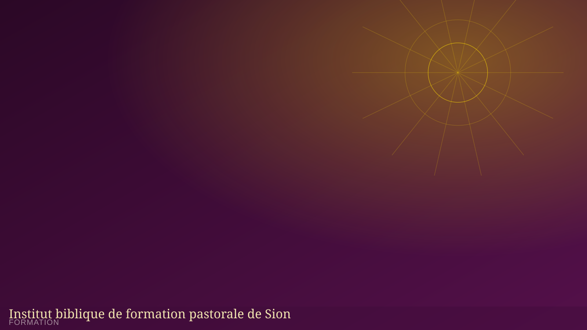

Institut biblique de formation pastorale de Sion
Une formation biblique et pastorale pour les leaders, les chrétiens engagés et les futurs pasteurs, membres ou non de la MIERR.
Former des serviteurs selon le cœur de Dieu
L'Institut biblique de formation pastorale de Sion prépare les leaders des départements, les chrétiens engagés et les futurs pasteurs à une meilleure connaissance de la Parole et à un service fidèle dans l'Église.
Ouvert à toute personne — membre ou non de la MIERR — désireuse d'approfondir sa foi et sa connaissance biblique.
Notre programme de formation
Fondements bibliques
Étude systématique de l'Ancien et du Nouveau Testament, herméneutique et doctrine chrétienne.
Vie spirituelle & ministère
Formation à la prière, au discernement spirituel et à l'exercice des dons ministériels.
Leadership pastoral
Éthique pastorale, homilétique, gestion d'église et accompagnement des membres.
Conditions d'admission
- Être né(e) de nouveau et engagé(e) dans une communauté chrétienne
- Recommandation d'un pasteur ou d'un responsable spirituel
- Disponibilité pour suivre l'ensemble du cursus
- [Autres conditions à préciser selon le règlement de l'institut]
Durée & modalités
- Durée de la formation : [à préciser]
- Rythme des cours : [à préciser]
- Lieu de formation : [à préciser]
- Frais d'inscription et de scolarité : [à préciser]
Formulaire d'inscription
Remplissez ce formulaire pour recevoir les informations relatives à la prochaine session de formation.